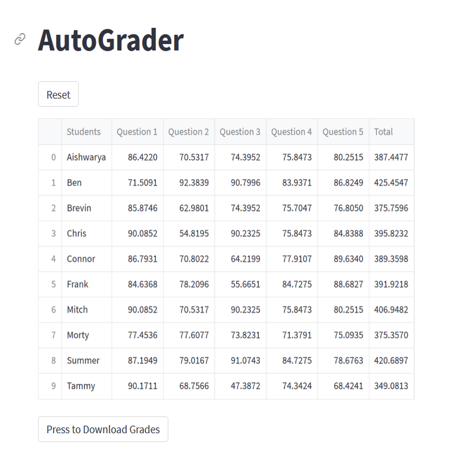

Automated short answer grading system for teachers

| Introduction | This course project taught me the importance of designing a product to suit the
needs of a target audience. I proposed the idea for this group project because I
have both friends and family who are educators. We conducted interviews to assess their
needs for the product, and got their feedback on initial prototypes.
My roles on this project were:
More details about the project is below. |
| Motivation | Great strides are now being made in the world of artificial intelligence toward the automation of tedious tasks, reducing human workloads across a ariety of fields and industries. The workload of our educators is one that desperately needs a reduction, as they are overworked and understaffed. We interviewed several schoolteachers to gather data on their preferences, and conceptualized various solutions to the problem. As such, in this work we plan to develop a user-friendly intelligent tool that reduces the workload of teachers. Our tool’s chosen concept involves the use of natural language processing to grade short form answer assignments. |
| Methods | We offer a fun and interactive game as a way to teach children these
important typing skills. Our game will feature the following major
components:
|
| Results | Our machine learning pipeline for grading short answer questions was successfully
developed and tested through multiple prototypes. We were able to achieve high
accuracy in converting handwriting to text using the pre-trained TrOCR model, which
resulted in a nearly perfect accuracy for our purposes. We also tested the robustness
of the model by examining longer phrases and messier handwriting, and found that
snipping the answers line by line improved the model's accuracy. The final version of our app successfully allowed teachers to upload a CSV file containing their answer key, eliminating the need to type in the answers again after every reset. The app also allowed teachers to upload a ZIP file containing the class’ scanned assignments as individual PDFs, which were segmented and converted to text format using OCR. Our evaluation function successfully compared the “semantic distance” between the correct answer provided by the teacher and each student’s answer, and converted the “distance” value into a grade using a manually tuned gain. The grade was then clipped to prevent negative scores from occurring. We tested the app on a sample dataset of short answer questions from a high school history exam, and found that the app was able to accurately grade each student's answer within minutes. Overall, our intelligent tool successfully reduced the workload of teachers by automating the grading of short answer questions, saving teachers hours each week in grading. This tool has the potential to revolutionize the field of education by allowing teachers to focus on more important tasks, such as lesson planning and providing individualized support to students. |
| Final Thoughts | The development of our intelligent tool that automates the grading of short answer
questions is a significant step towards easing the workload of educators, who are
often overworked and understaffed. The results of our product, which enables
teachers to upload pictures of their students' short answer questions and receive
a grade in minutes, are promising. Our machine learning pipeline can read each
student’s picture, convert the handwriting to text, and then grade each answer
by comparing it to the answer key that the teacher uploaded. Our product can automatically
analyze an entire class’s homework and then present a list of the student’s name and
their grade, thus saving teachers hours each week in grading. |